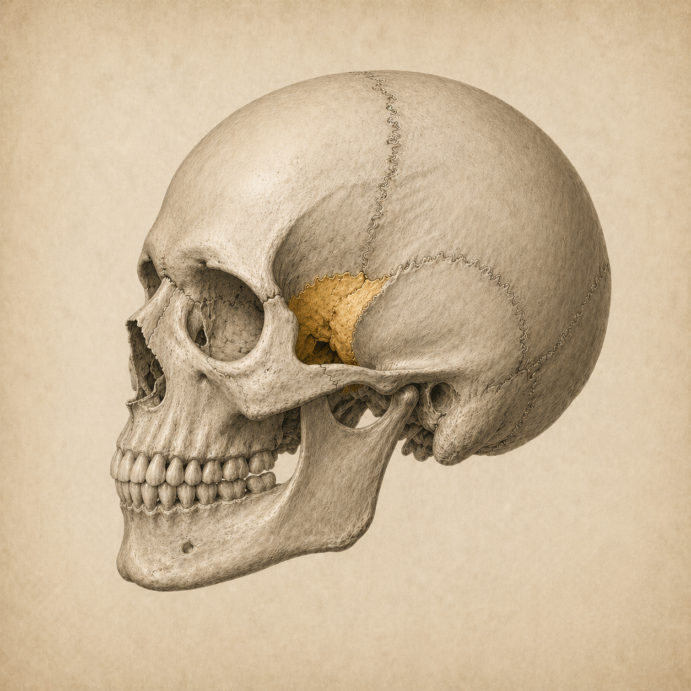

22 luuta. Yli sata saumaa.
Kallo ei ole yhtenäinen kova kuori, vaan herkästi liittyvien luiden kokonaisuus.
Kallon luiden välillä on yli sata saumaa eli suturaa. Ne eivät ole kiinteitä liitoksia — ne mahdollistavat luiden hienovaraisen liikkeen suhteessa toisiinsa.
Tämä liike on perusta kraniosakraaliselle rytmille ja sille hienolle viestintävirralle, joka kulkee kalvoissa, nesteissä ja faskian kautta läpi koko kehon.

Dura mater — yhtenäinen jatkumo.

Dura mater käärii aivot sisälleen ja suojaa selkäydintä. Se on osa keskushermoston suojajärjestelmää.
Se muodostaa myös sisäiset rakenteet: aivosirpin (falx cerebri), joka kulkee aivojen vasemman ja oikean puoliskon välissä, sekä pikkuaivoteltan (tentorium cerebelli), joka erottaa isoaivot pikkuaivoista.
Duuraputki kulkee kallon pohjalta aina sakrumiin asti — yhtenäisenä, jännittyvänä ja vapautuvana kokonaisuutena.
Hengitys, jota luut kuuntelevat.
Kallon liike tapahtuu kahden vaiheen kautta — fleksion ja ekstension. Tämä rytmi heijastuu koko kehoon.
Fleksio
- Kallo levenee ja lyhenee
- Parilliset luut rotatoituvat ulospäin ja alaspäin
- Parittomat luut liikkuvat alaspäin
- Keho rotatoituu ulospäin

Ekstensio
- Kallo kapenee ja pitenee
- Parilliset luut rotatoituvat sisäänpäin ja ylöspäin
- Parittomat luut liikkuvat ylöspäin
- Keho rotatoituu sisäänpäin


Vahva yhteys psyykkeeseen — vaikuttaa mielialaan, stressinsietokykyyn ja uneen. Voi ottaa häiriötä mistä tahansa kehossa tapahtuvasta.
Syväymmärrys ja selkeä näkökyky.
Koskettaa lähes kaikkia kallon luita. Suurin voima kraniosakraaliliikkeessä. Vaikuttaa silmiin, nieluun, poskionteloihin ja korviin. Duura kiinnittyy kitaluuhun turkinsatulan alueelle.
SBS — kraniosakraalinen lähtöpiste.

SBS on kitaluun ja takaraivoluun välinen nivel kallonpohjassa. Siitä liike kulkee sakrumiin saakka — aivo-selkäydinnesteen rauhallisen aaltoilun mukana.
Leuasta lantioon.
Alaleuka on ainoa liikkuva kalloluu. Sen vaikutus ulottuu kuitenkin paljon kalloa kauemmas — faskiaalisen yhteyden kautta.
Purentalihakset ja lantionpohjan lihakset ovat myös osittain yhteydessä autonomiseen hermostoon — esimerkiksi vaguksen ja trigeminuksen kautta.
Kun hengitys toimii huonosti, myös lantionpohja voi heikentyä. Huono ryhti puolestaan lisää kuormitusta tähän ketjuun — sekä lantionpohjaan että purentalihaksiin.